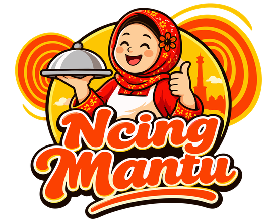
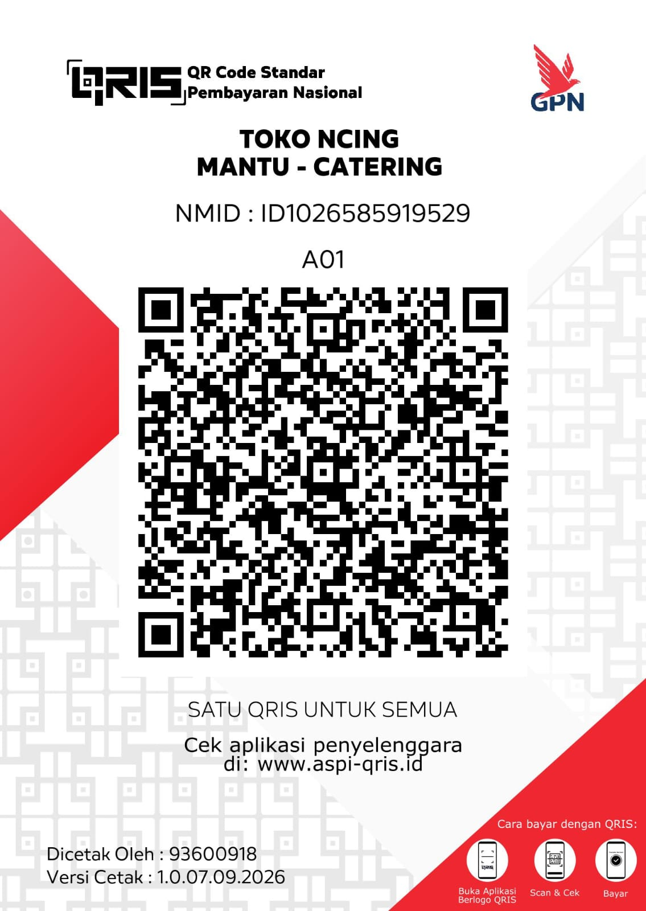

Segar Kulineran,
Bersih Berkelanjutan.
Pelopor Asinan Kuah Lemon dan asinan Kiamboy premium dengan konsep zero-waste. Kami mengolah kesegaran buahnya untuk camilanmu, dan mengekstrak kulit nanasnya menjadi sabun cuci piring alami yang ramah lingkungan!
Nama "Ncing Mantu" diambil dari nama panggilan sayang untuk Ibu kami di tengah-tengah keluarga besar Bapak. Sebuah nama yang membawa kehangatan kekeluargaan, ketulusan, dan resep warisan yang penuh kasih. Dari kehangatan dapur keluarga inilah, kami membawa semangat yang sama untuk menyajikan produk terbaik bagi Anda dan bumi.
TENTANG KAMIBerawal dari sebuah dapur rumahan pada September 2025, Ncing Mantu lahir sebagai usaha mikro (UMKM) kreatif yang mengusung konsep zero-waste. Kami bangga menjadi pelopor yang menggabungkan kesegaran kuliner Asinan Kuah Lemon Kiamboy premium dengan produk kebersihan ramah lingkungan, Sabun Cuci Piring Alami dari Kulit Nanas.
Dalam satu tahun perjalanan ini, Ncing Mantu berkomitmen untuk tidak sekadar berbisnis, tetapi juga bertanggung jawab pada lingkungan. Kami melihat bahwa produksi asinan menyisakan kulit nanas yang melimpah. Terinspirasi dari kearifan rumah tangga yang bijak, kami memilih untuk tidak membuangnya. Daging buah nanas yang manis dan segar kami olah dengan racikan kuah lemon kiamboy yang segar menyehatkan. Sementara itu, kulit nanasnya kami proses kembali melalui fermentasi alami menjadi sabun cuci piring kaya enzim.
Kombinasi antara kuliner segar dan produk eco-friendly membuat bisnis kami memiliki daya saing yang sangat tinggi dan sulit ditiru kompetitor:
Kisah Perjalanan 1 Tahun Kami ⌄

Alamat : kemanggisan No E26
Tersedia di Shopee food : Toko Ncing Mantu
Terima Kasih Sudah Berkunjung :)